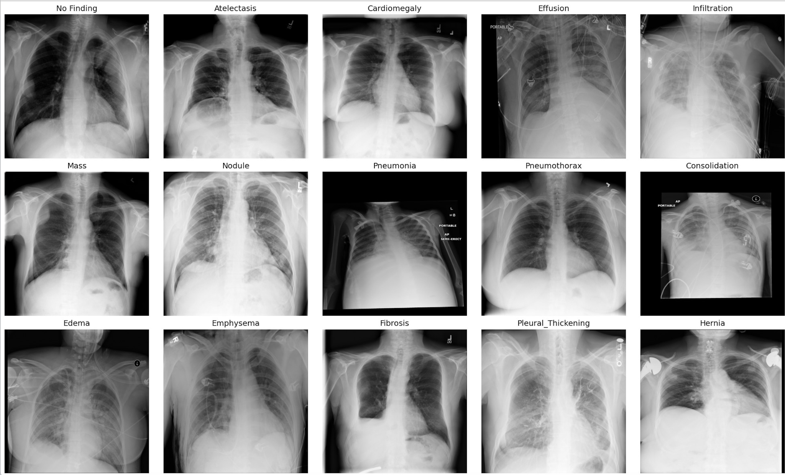
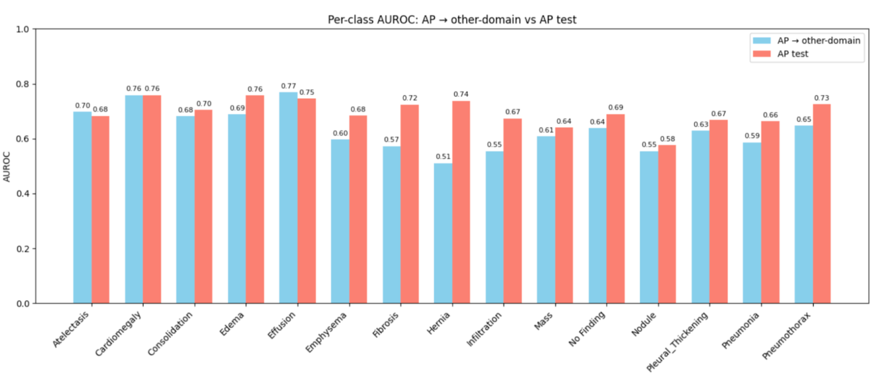
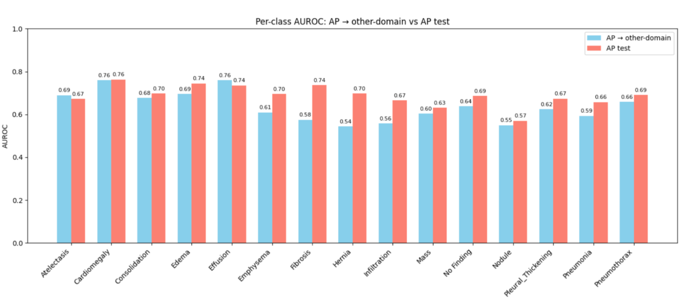
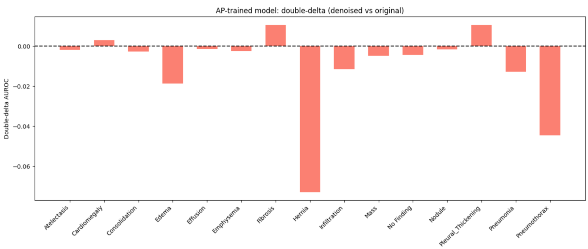
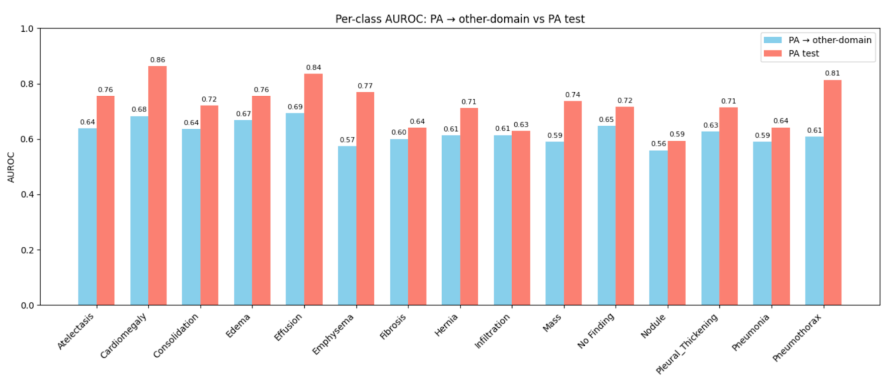
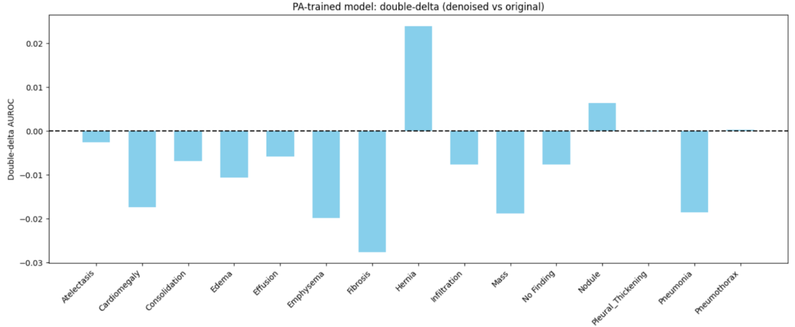

Latent Diffusion Models For Chest X-Ray
Classifier Domain Shift
Classifier Domain Shift
Deep learning has been widely studied for medical image analysis, including chest X-rays, where models are trained to predict disease labels directly from images. However, these models often struggle when the images come from a different setting than the training data. One such example is view position. Frontal chest X-rays are typically acquired as anteroposterior (AP) or posteroanterior (PA) views, which differ in patient positioning and angle. AP images, often taken with portable equipment, tend to enlarge the heart compared to standard PA images. These differences cause a model trained mostly on one view to perform noticeably worse on the other and, more generally, contribute to domain shift in chest X-ray classification.
Diffusion models learn a prior over images by iteratively denoising noisy samples toward the data distribution. Latent diffusion models (LDMs) make this process more efficient by first compressing images into a lower-dimensional latent space (for example, with an autoencoder) and running diffusion there before decoding back to pixels. In medical imaging, diffusion is most often used to generate new data or to support domain shift methods that assume access to both source and target images during training. In practice, target domain data is not always available, for instance, for underrepresented hospitals or varying X-ray views.
We instead study what latent diffusion can contribute to domain robustness when only a single domain is available. We hypothesize that diffusion can act as a tool to make unseen view images look more like the training domain in latent space. By applying a small noise/denoise step using a prior learned from a source view, we modify latents from both AP and PA images so they more closely match a shared prior. This leads to our research question: can a latent diffusion model trained on a single chest X-ray view, and applied as a small noise/denoise step at test time, reduce AP/PA domain shift in multi-label disease classification, compared to a VAE-only baseline?
Our project provides the first systematic evaluation of latent diffusion for AP/PA view shift in chest X-ray classification when only a single view is available. Unlike prior work that uses diffusion mainly to generate synthetic chest X-rays or assumes access to both source and target domains, we train a latent diffusion model on one view and use it only to regularize VAE latents for multi-label disease prediction. Our results show that this setup reduces the AP/PA domain gap, suggesting that latent diffusion can help stabilize performance on underrepresented data in medical imaging.
Deep learning has shown strong performance in chest X-ray analysis, including multi-label classification, localization, and segmentation. Wang et al. (2017) [1] introduced the ChestX-ray8 dataset as a benchmark, and Guo et al. (2024)[2] demonstrated models often fail to generalize across different acquisition settings, hospitals, or patient populations, highlighting domain shift. Scanner and view differences can cause substantial performance drops, with MRI affected severely and X-rays moderately.
Domain adaptation (DA) and domain generalization (DG) approaches, including meta-learning (Li et al., 2020 [3]) and adversarial GAN-based methods (Nature Scientific Reports, 2025 [4]), aim to reduce these shifts but typically require access to target-domain data. Generative models, particularly diffusion models, have recently emerged as tools for medical image generation and reconstruction. DDPMs (Ho et al., 2020 [5]) and latent diffusion models (Rombach et al., 2022 [6]) learn generative priors by reversing a noise-corruption process and have been applied to MRI, CT, and X-ray synthesis, denoising, artifact correction, and super-resolution. Surveys such as Kazerouni et al. (2022 [7]) note that diffusion models address common GAN issues like mode collapse while providing high-quality samples. In chest X-rays, diffusion has been used for synthetic image generation, style transfer, data augmentation, and domain translation, often requiring access to both source and target distributions during training. Conditional diffusion models trained on multiple scanner styles, for example, can translate images between domains, but rely on paired or co-existing multi-domain datasets.
Existing work, however, has not investigated whether diffusion priors can strengthen latent representations for downstream classifiers, nor whether a diffusion model trained on a single view (AP or PA) can improve robustness to the unseen view. Our project addresses this gap by using latent diffusion as a latent space regularizer to reduce AP/PA domain shift in multi-label chest X-ray classification without access to target-domain images, focusing on representation refinement rather than image synthesis.

We first train a convolutional variational autoencoder (VAE) that maps each X-ray, preprocessed to a single-channel 256x256 image, to a low-dimensional latent vector (dimension 64) and reconstructs it back to image space. For each source view (AP or PA), we train a separate VAE on that view only, using an 80-20 train-validation split.
The VAE is trained with an objective that combines mean squared error (MSE) reconstruction loss with a KL-divergence regularizer. Each model is trained for 5 epochs over the full source view dataset (>60k PA images or >44k AP images). Across both view types, train and validation MSE converged to roughly 280, indicating reasonable reconstruction quality without severe overfitting.
\[ z_t = \sqrt{\bar{\alpha}_t}\, z + \sqrt{1 - \bar{\alpha}_t}\, \varepsilon, \qquad \varepsilon \sim \mathcal{N}(0, I), \]
and train a neural network \(\varepsilon_\theta(z_t, t)\) to predict the injected noise. We minimize:
\[ \mathcal{L} = \mathbb{E}_{z, t, \varepsilon} \bigl[ \lVert \varepsilon - \varepsilon_\theta(z_t, t) \rVert_2^2 \bigr], \]
which is the standard DDPM noise-prediction objective.
Our setting operates on low-dimensional VAE latents (64 dimensions). Accordingly, we use a lightweight MLP conditional on timestep embeddings. The model learns a generative prior over AP or PA latent geometry.
After training, the diffusion model maps a noisy latent back toward the distribution learned from the source view data. This process effectively regularizes the latent representation, pulling it toward the VAE’s underlying manifold and reducing view-specific distortions without changing the VAE parameters.
We evaluate whether diffusion-based latent refinement improves cross-view generalization for pathology prediction. For each image \(x\), we construct two types of representations:
These features come directly from the frozen VAE encoder and represent the conventional latent embedding used in many VAE-based diagnostic pipelines.
\[ z_{t^*} = \sqrt{\bar{\alpha}_{t^*}}\, z_{\text{raw}} + \sqrt{1 - \bar{\alpha}_{t^*}}\, \varepsilon, \]
and run a single reverse-diffusion denoising step:
\[ \hat{z} \;=\; f_{\theta}(z_{t^*},\, t^*). \]
This encourages the latent to move toward regions of latent space consistent with the source view VAE distribution (AP or PA), smoothing noise and reducing view-dependent distortions. The classifier only sees these refined latents, not the images themselves, so any performance gain must arise from improved latent representations.
We study how source view and diffusion affect robustness to AP/PA domain shift.
The experiment proceeds as follows:
Evaluation: Each classifier is assessed in two ways:
We use Area Under the Curve (AUROC) as our evaluation metric. AUROC is a suitable metric because it measures how well the model ranks positive cases above negative ones across all score thresholds and can be computed separately for each disease. This matches our setting where one image can be labeled with multiple diseases. We report macro and per-label AUROC across diseases and focus on the domain gap:
\[ \Delta = \text{AUROC}_{\text{in-domain}} - \text{AUROC}_{\text{cross-domain}}. \]
where smaller \(\Delta\) indicates less degradation under AP/PA shift. We compute \(\Delta\) for both pipelines (VAE-only and VAE + diffusion) across all four configurations to evaluate whether diffusion reduces the AP/PA domain gap.
Architectural and training hyperparameters for each stage are summarized in the following tables:| Category | Value |
|---|---|
| Encoder Depth | 4 convolutional blocks + linear layers (μ, logσ²) |
| Decoder Depth | Linear + reshape + 4 transposed convolution blocks |
| Latent Dimension | 64 |
| Training Epochs | 5 |
| Batch Size | 256 |
| Optimizer | Adam (lr = 1e-3) |
| Loss Function | MSE reconstruction + KL divergence |
| Category | Value |
|---|---|
| Diffusion Steps (T) | 1000 |
| Noise Schedule | Linear schedulet |
| Model Architecture | MLP denoiser (64 → 128 → 64 → 64) |
| Training Epochs | 20 |
| Batch Size | 256 |
| Optimizer | Adam (lr = 1e-4) |
| Category | Value |
|---|---|
| Hidden Sizes | 128 → 64 |
| Number of Layers | 3 linear layers (64 → 128 → 64 → 15) |
| Activation | ReLU |
| Batch Size | 256 |
| Optimizer | Adam (lr = 1e-3) |
| Training Epochs | 20 |
| Loss Function | BCEWithLogitsLoss |

When we add a small diffusion denoising step on the latents, the macro AUROC on AP test images changes only slightly (0.70 → 0.69), so in-domain performance is essentially preserved. However, the macro AUROC on PA images increases from 0.63 to 0.65, meaning the AP-trained model does a bit better on the unseen view.

To summarize how the gap changes per disease, Figure C plots a “double-delta” for each class. For disease \(k\), we define:
\[ \Delta^{(k)}_{\text{diff}} = \big( \text{AP}^{(k)}_{\text{denoised}} - \text{PA}^{(k)}_{\text{denoised}} \big) - \big( \text{AP}^{(k)}_{\text{original}} - \text{PA}^{(k)}_{\text{original}} \big). \]

| class | test_AP_denoised | double_delta | delta_denoised | delta_original |
|---|---|---|---|---|
| Hernia | 0.698012 | -0.072940 | 0.154277 | 0.227217 |
| Pneumothorax | 0.691446 | -0.044538 | 0.033361 | 0.077899 |
| Edema | 0.744306 | -0.018603 | 0.049573 | 0.068176 |
| Pneumonia | 0.657743 | -0.012706 | 0.064339 | 0.077044 |
| Infiltration | 0.666233 | -0.011479 | 0.107711 | 0.119191 |
| Mass | 0.631571 | -0.004799 | 0.027447 | 0.032246 |
| No Finding | 0.686138 | -0.004240 | 0.047680 | 0.051920 |
| Consolidation | 0.697211 | -0.002669 | 0.020308 | 0.022977 |
| Emphysema | 0.695523 | -0.002460 | 0.085843 | 0.088303 |
| Atelectasis | 0.672948 | -0.001825 | -0.016666 | -0.014841 |
| Nodule | 0.570515 | -0.001635 | 0.020991 | 0.022626 |
| Effusion | 0.735596 | -0.001399 | -0.023606 | -0.022207 |
| Cardiomegaly | 0.763079 | 0.003002 | 0.003397 | 0.000395 |
| Fibrosis | 0.736810 | 0.010587 | 0.161774 | 0.151187 |
| Pleural_Thickening | 0.673475 | 0.010597 | 0.049091 | 0.038494 |
Values below zero mean that diffusion improved/reduced the domain gap for that disease. The mean double-delta across all 14 pathologies is −0.0103. This may seem small, but Figure C shows that most diseases have negative double-delta values, indicating widely improved cross-domain behavior. Some classes benefit much more than average: for example, hernia has a double-delta of about −0.07 because its domain gap shrinks from roughly 0.23 to 0.16, and its PA AUROC rises from about 0.51 to 0.54. Pneumothorax shows a similar pattern of improvement.
The table in Figure C lists the exact AUROC values for each disease in the AP-trained setting (original vs. diffusion, AP vs. PA), reinforcing the main trends shown above. Our results show that training purely on AP creates a noticeable performance drop on PA images, and latent diffusion mitigates that drop without sacrificing AP performance.

To summarize how the gap changes per disease, Figure F plots a “double-delta” for each class. For disease \(k\), we define:
\[ \Delta^{(k)}_{\text{diff}} = \big( \text{PA}^{(k)}_{\text{denoised}} - \text{AP}^{(k)}_{\text{denoised}} \big) - \big( \text{PA}^{(k)}_{\text{original}} - \text{AP}^{(k)}_{\text{original}} \big). \]

| class | test_PA_denoised | double_delta | delta_denoised | delta_original |
|---|---|---|---|---|
| Fibrosis | 0.619635 | -0.027557 | 0.012189 | 0.039746 |
| Emphysema | 0.765418 | -0.019833 | 0.175224 | 0.195057 |
| Mass | 0.712057 | -0.018806 | 0.127157 | 0.145963 |
| Pneumonia | 0.633749 | -0.018498 | 0.032965 | 0.051463 |
| Cardiomegaly | 0.856743 | -0.017370 | 0.162933 | 0.180304 |
| Edema | 0.745859 | -0.010642 | 0.076238 | 0.086880 |
| No Finding | 0.712733 | -0.007583 | 0.061717 | 0.069300 |
| Infiltration | 0.621657 | -0.007566 | 0.007263 | 0.014829 |
| Consolidation | 0.717739 | -0.006855 | 0.077939 | 0.084794 |
| Effusion | 0.829343 | -0.005736 | 0.136966 | 0.142702 |
| Atelectasis | 0.741936 | -0.002559 | 0.114241 | 0.116800 |
| Pleural_Thickening | 0.720296 | -0.000057 | 0.087447 | 0.087504 |
| Pneumothorax | 0.811678 | 0.000286 | 0.204602 | 0.204316 |
| Nodule | 0.592849 | 0.006394 | 0.040546 | 0.034152 |
| Hernia | 0.699858 | 0.023913 | 0.122367 | 0.098454 |
When treating PA images as the source domain, we observe a similar but distinct pattern compared to the AP setting. The mean double-delta across all classes was -0.0075. While this value is smaller than in the AP-trained experiment, it confirms that latent diffusion generally acts to reduce the performance gap between the source (PA) and target (AP) domains.
A closer look reveals that the vast majority of pathologies exhibited negative double-delta values, indicating widespread improvement in cross-domain robustness. However, the overall mean was heavily influenced by a single outlier: Hernia. In the AP-trained model, Hernia saw the most dramatic improvement; conversely, in the PA-trained model, it exhibited a positive double-delta of +0.024. This "Hernia offset" effectively counterbalanced the gains achieved by other classes, dragging the mean improvement closer to zero despite the broad trend of gap reduction.
Excluding this outlier, several conditions improved significantly from the diffusion refinement. The most substantial reduction in the domain gap occurred for Effusion, which showed a double-delta of approximately -0.086. This was followed by Fibrosis (-0.028) and Emphysema (-0.020). Several other pathologies, including Mass (-0.019), Pneumonia (-0.018), and Cardiomegaly (-0.017), showed consistent but moderate improvements.
We only study the NIH Chest X-ray dataset and focus on the AP/PA split, so performance might differ in other hospitals, scanners, or imaging settings. However, the methods and insights used, such as using latent space diffusion to reduce domain shifts, can likely be applied to other datasets, modalities, or related tasks. The diffusion model is trained just to denoise source latents, without explicitly removing view-specific information or aligning AP and PA distributions, so it cannot fully bridge the domain gap on its own. Due to our compute limitation, our models are relatively small, trained for only a few epochs, and the latent size is just 64, which limits the detail captured in the representations. Finally, we use a simple MLP as the downstream classifier, which isolates the effect of the learned representations but results in AUROC values lower than those of state-of-the-art deep learning chest X-ray models. Despite these limitations, we see promising indications that this approach helps reduce domain shifts, and larger models, longer training, or higher-dimensional latent spaces could further improve results.
There are several natural extensions of this work. On the modeling side, increasing the latent dimension and training for longer could improve reconstruction quality and give the diffusion model more room to learn useful invariances. Additionally, future experiments could introduce multiple domain labels, such as different hospitals or scanner models, and test whether diffusion can help shrink gaps across several domains at once.
Furthermore, it would be interesting to let the diffusion model see a limited amount of target view data during training (e.g., a few PA images when AP is the source), so it can learn information about the target domain instead of training completely blind to it. Another direction is to train diffusion with domain-awareness by adding an explicit adversarial or contrastive objective that encourages AP and PA latents to align.
More broadly, our results explore the potential of diffusion models to change representations from one domain so they more closely resemble another, rather than using diffusion only for generative purposes. This idea can be expanded beyond chest X-rays, and similar setups could be applied in other deep learning problems where models need to handle a shift between training and test domains.
In this project, we evaluated whether a latent diffusion model trained solely on a single source view (AP or PA) of chest X-rays could reduce domain shift without explicit access to the target domain. We first showed that models trained exclusively on one view experienced a clear performance drop when evaluated on the opposite, unseen view, confirming a substantial AP/PA domain shift. We then trained VAEs on NIH Chest X-ray AP or PA images, fit a latent diffusion model on source view latents, and compared disease classifiers trained on raw latents to classifiers trained on latents after a small noise/denoise diffusion step. Across our experiments, the diffusion step kept performance on the source view nearly unchanged while slightly but consistently reducing the AP/PA performance gap.
It is increasingly important to develop methods for mitigating domain shift in medical imaging because many clinical datasets are imbalanced across underrepresented settings such as lesser-used scanners and smaller hospitals, which often see the largest performance drops. Our work addresses a gap in prior diffusion-based approaches, which typically generate synthetic images or assume access to both source and target domains during training, by showing that a single-view latent diffusion model can already improve robustness to AP/PA view shift when used only as a latent regularizer. Our results suggest that diffusion models can help build more reliable chest X-ray classifiers in underrepresented settings. More generally, this work highlights a path for future research that uses generative models to improve robustness and equity for patients whose data are least represented in training.